Nuestras Actividades
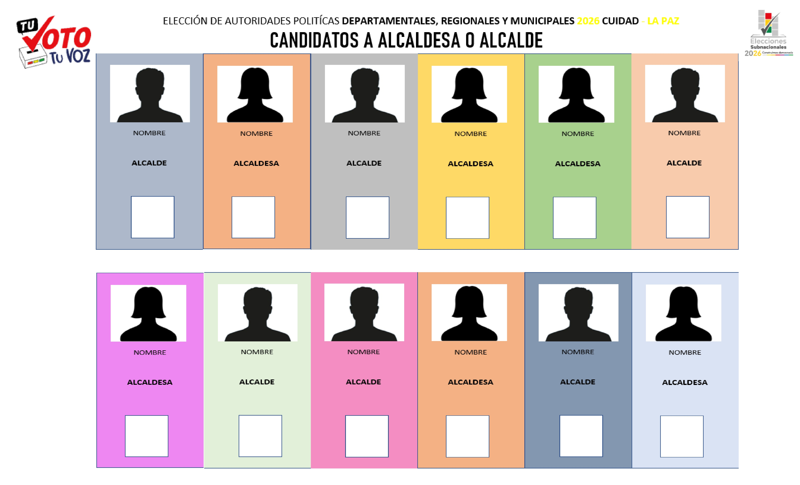
Simulación de votación
La simulación de votación es una actividad educativa que permite a las personas aprender cómo funciona el proceso electoral de forma práctica y sencilla. A través de esta experiencia, los participantes pueden conocer los pasos que se siguen al momento de emitir su voto, desde recibir la papeleta hasta depositarla en la urna.
Durante la simulación se enseñan aspectos importantes como marcar correctamente la opción elegida dentro del recuadro correspondiente, revisar bien la papeleta antes de entregarla y mantener la calma durante el proceso.
También se promueve la importancia de votar sin presión externa, respetando la decisión personal de cada ciudadano. Estas prácticas ayudan a que las personas se sientan más seguras y preparadas cuando participen en una votación real.
Encuestas sobre la participación juvenil
Las encuestas permiten conocer qué tan informados y preparados están los jóvenes para participar en procesos democráticos como las elecciones. A través de estas consultas se puede analizar si los jóvenes investigan a los candidatos, conocen sus propuestas o si toman decisiones basadas en otros factores menos informados.
Este tipo de estudios también busca entender cómo perciben los jóvenes la política y qué tan interesados están en participar activamente en la toma de decisiones del país.
Los resultados ayudan a identificar la necesidad de fortalecer la educación cívica, promover el pensamiento crítico y motivar a los jóvenes a votar de manera responsable, informada y consciente.
Tu Voto, Tu Voz
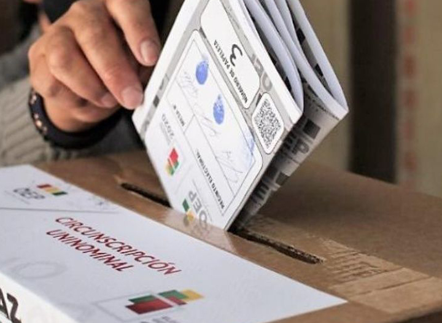
¡Participa en la democracia!
"Tu Voto, Tu Voz" es un proyecto de educación cívica que busca informar detalladamente sobre los candidatos a las elecciones subnacionales en el municipio de La Paz, mostrando sus planes de gobierno y principales propuestas.
El proyecto está gestionando visitas a Unidades Educativas, cada una con una población de más de 600 estudiantes, donde los jóvenes de 6to de secundaria votarán por primera vez, con el fin de brindar información necesaria para que cumplan con el deber ciudadano de forma informada.
Capacitaciones
Acciones de movilización con colegios para realizar encuestas-diagnóstico sobre las propuestas de cada partido político.
Simulacros de Votación
Conformación de equipos de apoyo para realizar simulacros de votación con papeletas de sufragio reales.
Blog Informativo
Creación de una base de datos donde la ciudadanía pueda encontrar toda la información de los candidatos.
Videos Informativos
Producción de vídeos para redes sociales explicando la importancia del voto informado y responsable.
Objetivos y Resultados Esperados
Visitar Unidades Educativas
Realización de encuestas-diagnóstico que permitirán cercanía, atención e interés por el proceso electoral y la responsabilidad del voto.
Simulacro Vivencial de Votación
Los estudiantes podrán informarse de cada candidato y partido, conocer la papeleta y administrar la conciencia de voto.
Blog Informativo
Creación de un blog abierto con toda la información electoral que responda a principios de información, cultura de paz y valores democráticos.
Material Audiovisual
Producción de reels cortos con información verídica del proceso electoral, difundidos por redes sociales.
Candidatos a Alcaldía de La Paz
Haz clic en cada candidato para conocer su plan de gobierno
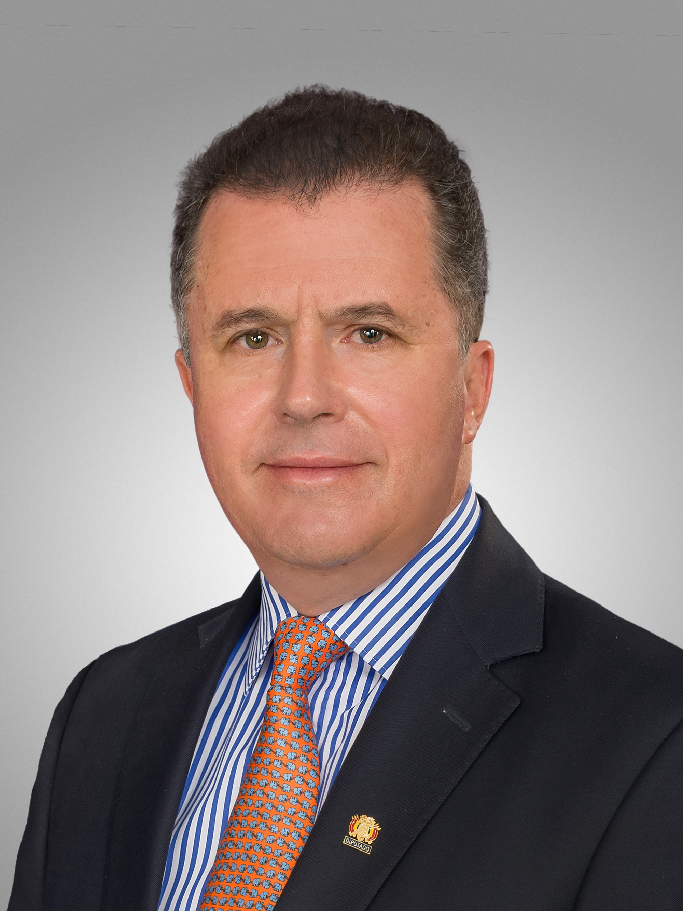
Miguel Roca
Alianza Somos La Paz
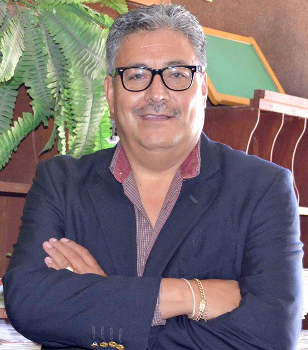
Jhonny Dario Plata Chalar
Jallalla LP

Francisco Xavier Iturralde
Alianza Social Patriótica (ASP)
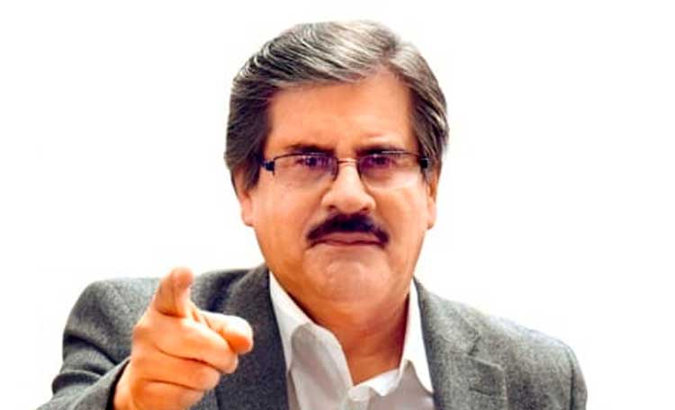
Waldo Albarracín Sánchez
Venceremos (V)

Carlos Eduardo Palenque Monroy
Libertad y República (LIBRE)
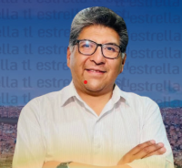
Felipe Fernández Cano
A-UPP
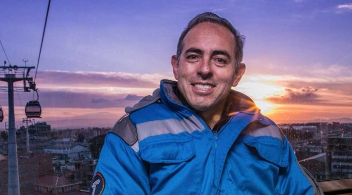
César Luís Dockweiler Suárez
Agrupación Innovación Humana

Fernando Henrry Valencia Aguilera
VIDA
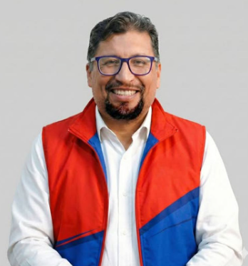
Raul Daza Quiroga
Frente Revolucionario de Izquierda (FRI)

Mario Silva Coya
Partido Demócrata Cristiano (PDC)

Jorge Dulón Fernández
Movimiento Tercer Sistema (MTS)

Hernán Rodrigo Rivera Nava
Nueva Generación Patriótica (NGP)
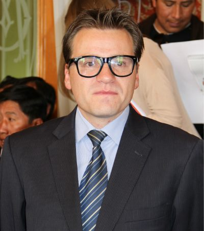
Óscar Manuel Sogliano Helguero
Autonomía para Bolivia Súmate

Carlos Nemo Rivero Auza
Alianza Patria La Paz

Iván Arias Durán
Suma por el Bien Común

Ricardo Eloy Cuevas Vera
Movimiento por la Soberanía (MPS)
Luis Eduardo "Chichi" Siles
Unión por el Cambio (UPC)
Nuestros Aliados
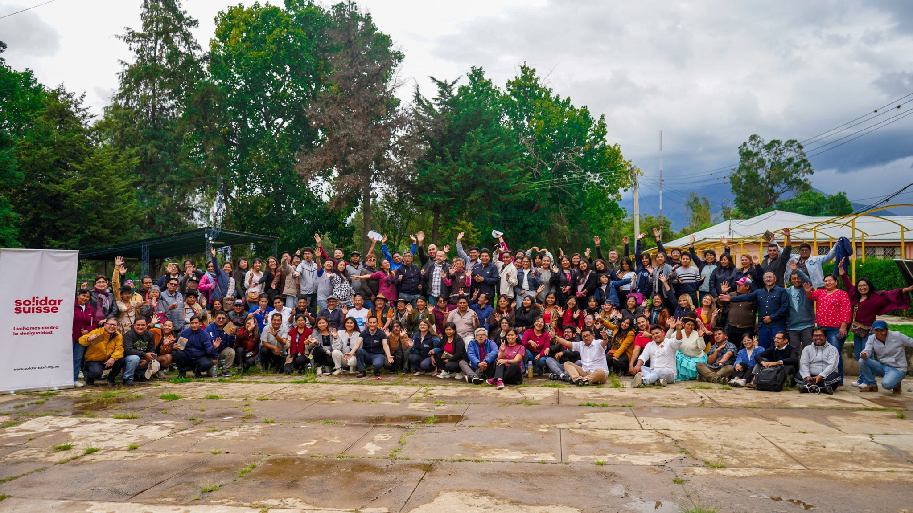
RedCom – Red Nacional de Comunicadores Locales
La Red Nacional de Comunicadores y Comunicadoras Locales (RedCom) es la red de comunicación local más grande de Bolivia. Está conformada por más de 150 periodistas, comunicadores y creadores de contenido provenientes de comunidades y municipios de los nueve departamentos del país.
Su trabajo se centra en fortalecer las capacidades de los comunicadores mediante espacios de intercambio de experiencias, buenas prácticas y herramientas digitales que permitan mejorar la comunicación comunitaria.
Además, RedCom organiza encuentros nacionales donde se debaten temas relacionados con la democracia, los desafíos municipales y el impacto de las plataformas digitales en la información.
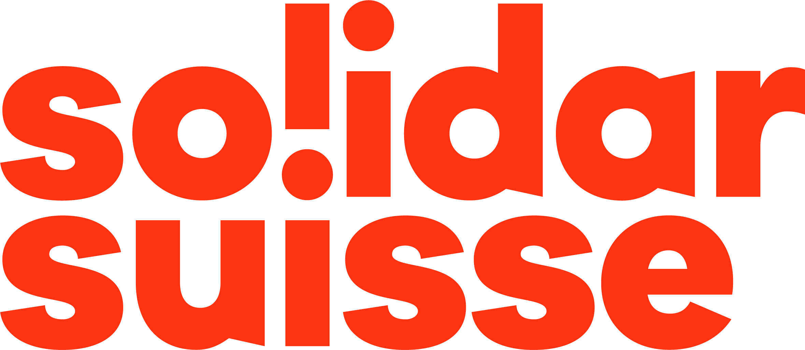
Solidar Suisse Bolivia
Solidar Suisse Bolivia es una organización internacional de cooperación que trabaja en el país desde hace más de 30 años. Su misión es contribuir a mejorar las condiciones de vida de trabajadores precarios y jóvenes, promoviendo la justicia social y el desarrollo sostenible.
Entre sus principales áreas de trabajo se encuentra la promoción del trabajo digno y el acceso a oportunidades laborales para jóvenes, mediante capacitaciones, pasantías y apoyo a emprendimientos.
También impulsa proyectos para prevenir la violencia de género, fortalecer la participación democrática y fomentar la igualdad de oportunidades.
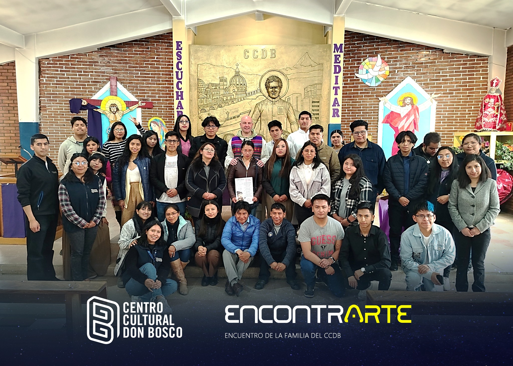
Centro Cultural Don Bosco
El Centro Cultural Don Bosco (CCDB) es una institución cultural dedicada a promover el sin fines de lucro jóvenes. Su principal desarrollo integral de los objetivo es incentivar a las nuevas generaciones a descubrir y fortalecer sus talentos en distintas disciplinas artísticas, culturales y profesionales.
El centro ofrece programas de educación artística como teatro, música, pintura y otras expresiones creativas, además de proyectos comunitarios, eventos culturales y actividades abiertas a la sociedad.
Inspirado en la espiritualidad de San Juan Bosco, el centro busca ser un espacio donde los jóvenes encuentren un segundo hogar, un lugar seguro para aprender, compartir, desarrollar su creatividad y crecer tanto personal como profesionalmente.
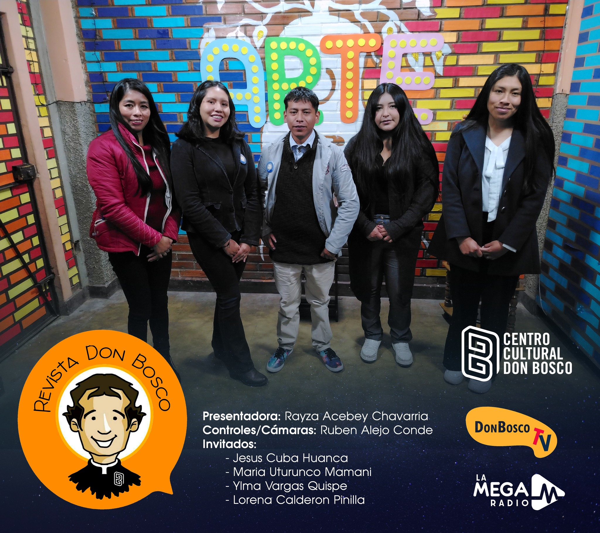
Don Bosco TV
Don Bosco TV es un canal de transmisión dedicado a difundir contenidos educativos, culturales y sociales. Su objetivo es brindar un espacio de comunicación que permita compartir actividades, proyectos y eventos relacionados con la comunidad del Centro Cultural Don Bosco y otras iniciativas juveniles.
A través de transmisiones, programas y producciones audiovisuales, el canal busca informar, educar y generar espacios de participación para jóvenes, voluntarios y organizaciones que trabajan por el desarrollo social.
Don Bosco TV también funciona como una plataforma que impulsa la creatividad, la comunicación comunitaria y la difusión de mensajes positivos.
La Mega Radio
La Mega Radio es un estudio de radio dedicado a la producción y transmisión de contenidos informativos, culturales y de entretenimiento. Este espacio funciona como un medio de comunicación que permite compartir noticias, programas educativos, entrevistas y actividades relacionadas con la comunidad.
Además de transmitir contenido radial, La Mega Radio también sirve como un espacio de formación para jóvenes interesados en la comunicación, permitiéndoles aprender sobre locución, producción de programas, manejo de equipos de audio y creación de contenido radiofónico.
De esta manera, la radio se convierte en una plataforma que fomenta la participación juvenil, la expresión de ideas y el fortalecimiento de la comunicación local.
Nuestro Equipo
Nuestro Equipo
Conoce al talentoso equipo detrás del proyecto "Tu Voto, Tu Voz". Profesionales y estudiantes comprometidos con la educación cívica y la democracia participativa.

Ruben Alejo Conde
Responsable del Proyecto TU VOTO, TU VOZ
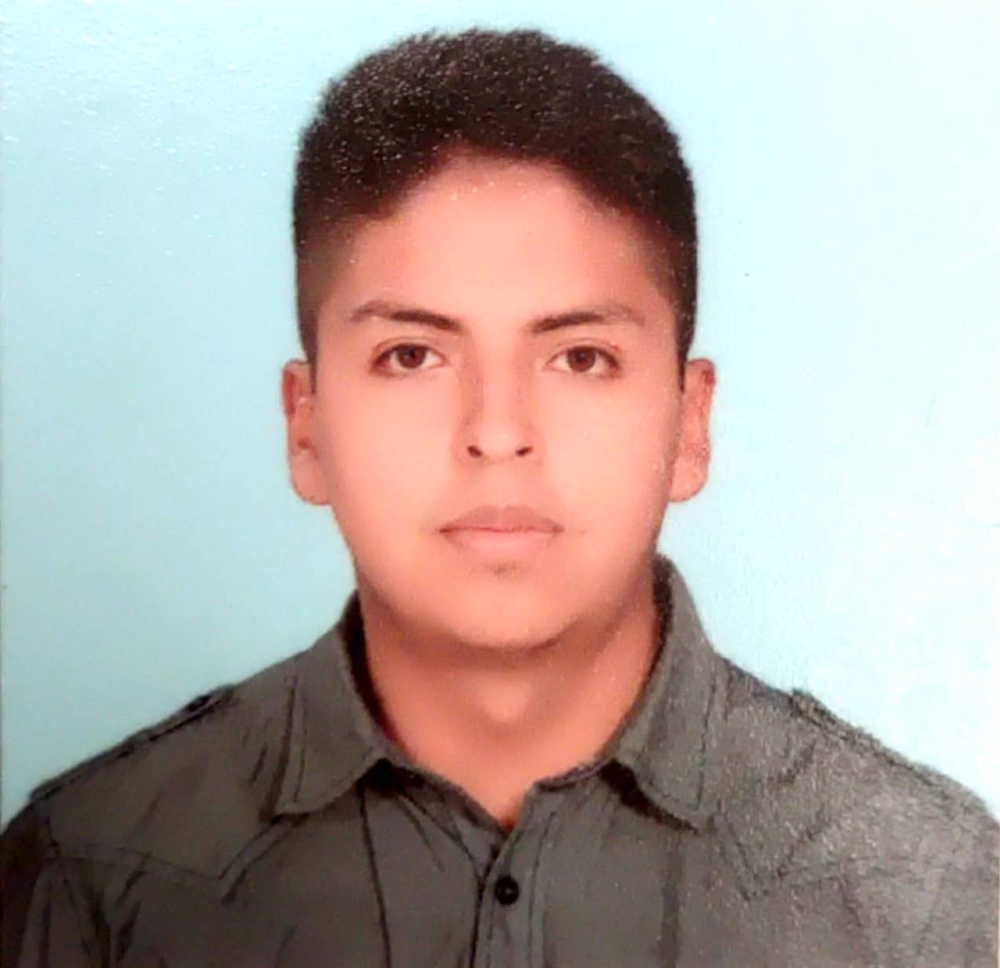
Andres Ignacio Guzmán Rodríguez
Responsable 2 del proyecto TU VOTO, TU VOZ
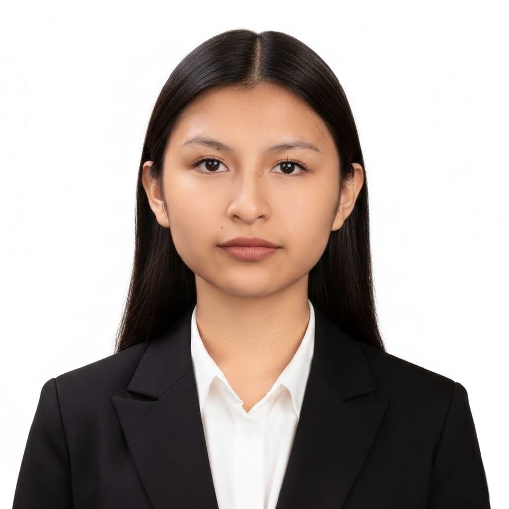
Galile Alison Llusco Asistiri
Estudiante de Ingeniería de Sistemas
Apoyó en la creación y desarrollo del blog
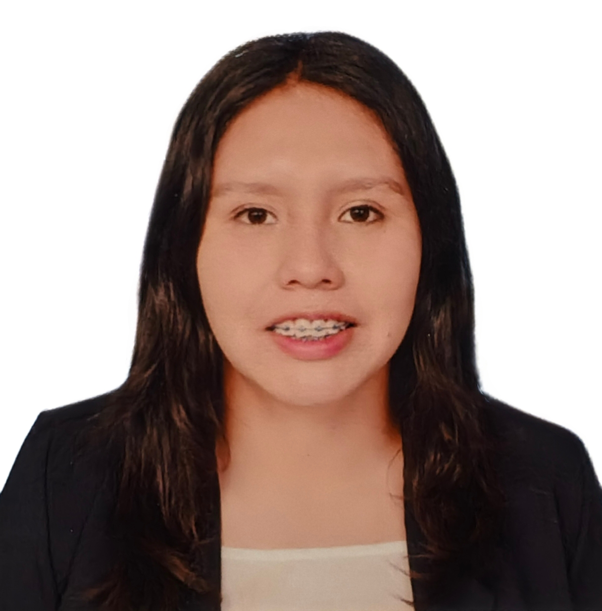
Rayza Alejandra Acebey Chavarria
Egresada de Comunicación Social - UMSA
Apoyó en cámaras
Yaneth Tuco Calle
Egresada de Administración de empresas - UMSA
Apoyo general de actividades
Violeta Romina Parra Rodriguez
Egresada de Comunicación Social
Apoyó en elaboración de los vídeos (reels)
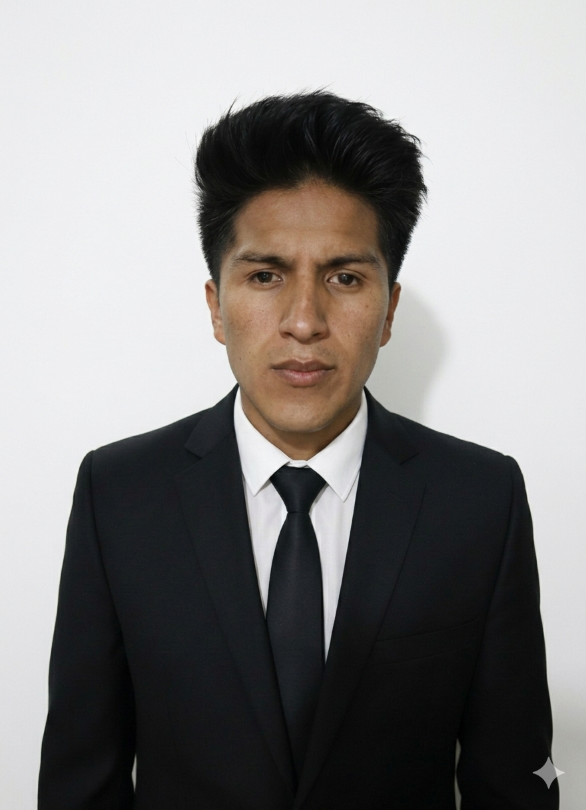
Julio Bladimir Tintaya Mosquera
Egresado de comunicación y tecnologías digitales - UTB
Edición de contenido multimedia
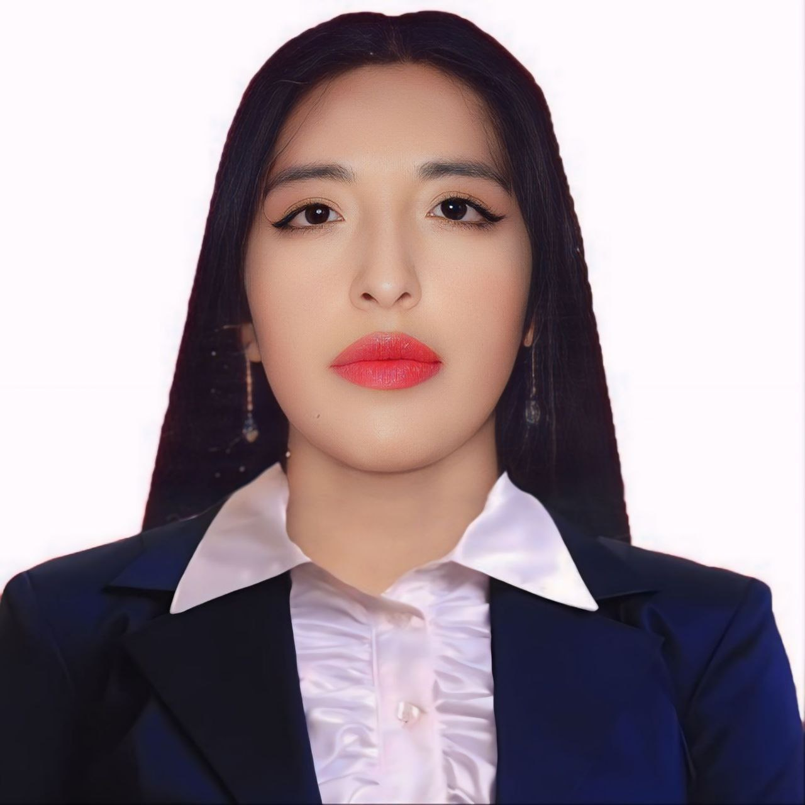
Carla Alexandra Soto Pintado
Egresada de Lingüística e idiomas - UPEA
Apoyo general de actividades
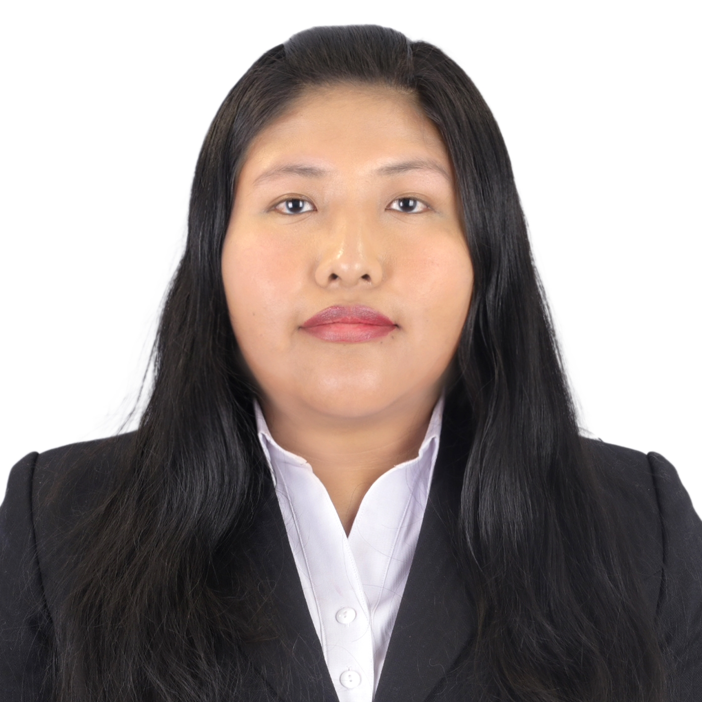
Silvia Mamani Cayaya
Egresada de comunicación social - UMSA
Apoyó en cámaras
Jhamil Nelson Limachi Rodriguez
Estudiante de la Carrera de Psicología - UMSA
Apoyo general de actividades
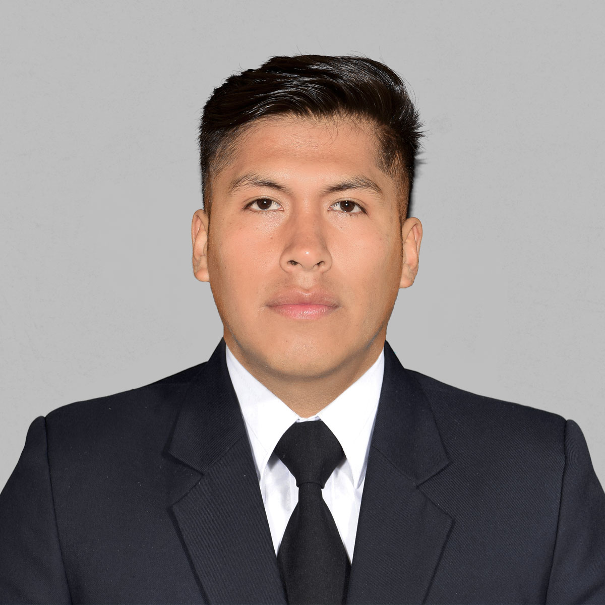
Nelson Flores Layme
Egresado de la carrera de Comunicación y Tecnologías Digitales
Presentador del proyecto tu voto, tu voz
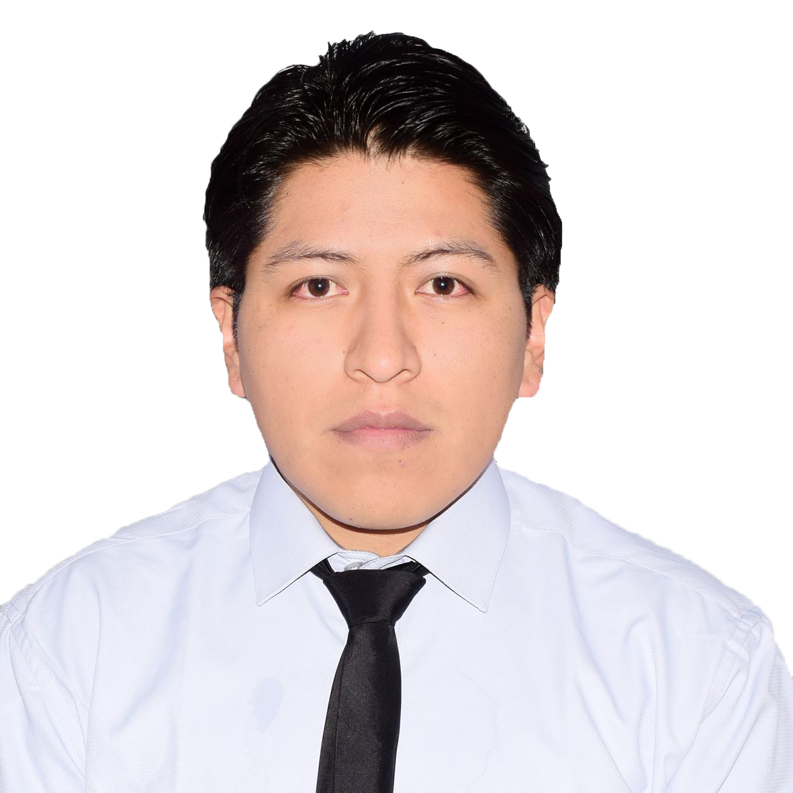
Elias Alvaro Chinche Ramirez
Egresado de Lingüística e idiomas - UPEA
Apoyo general de actividades
Maribel Limachi Jallasi
Egresada de la carrera Lingüística e idiomas - UPEA
Apoyo general de actividades
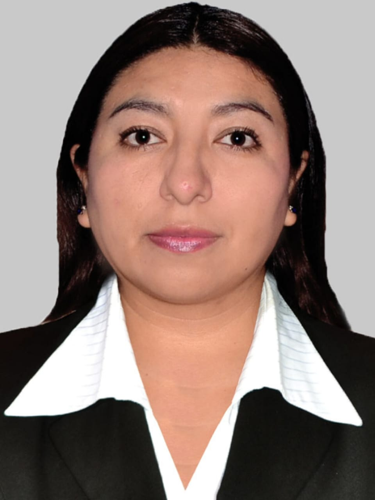
Abigail Marleny Quiñagua Mamani
Egresada de Comunicación Social
Apoyó en elaboración de los vídeos